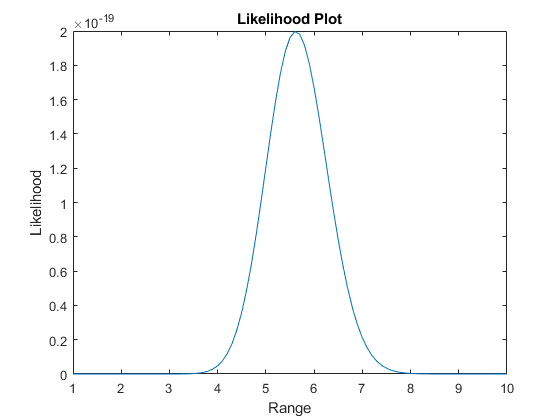
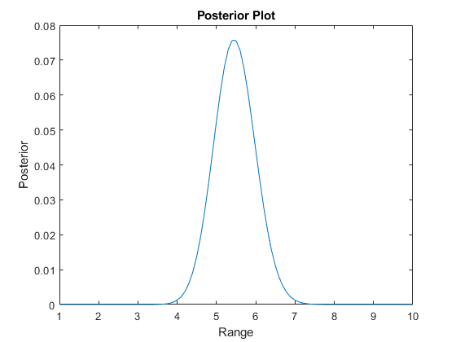

"Estimation Assignment 3"
function [outputArg] = likelihood(snrSamples,range) % Task 2 meanSnr = measurementFunction(range); outputArg = (1/meanSnr)*exp(-snrSamples/meanSnr); end
Contents
"Dheeraj Singh"
function meanSnr = measurementFunction(range) % Task 1 range_0 = 10.0; meanSnr = ((range_0./range).^2); end
close all clear all load('data.mat') % TIP: Use figure handles and fmin, example: funcHandle = @(x)-sin(x); maxim = fminbnd(funcHandle,0,pi); % Maximum comes out at pi/2 as expected
Plot the likelihood as a function of range Task 3
figure; Samples = data; range = 1:0.1:10; range_0 = 10; likeLihood = zeros(length(range),1); ele = 1; for r=range LikeL = likelihood(Samples, r); likeLihood(ele) = prod(LikeL, 'all'); ele = ele + 1; end plot(range, likeLihood); title('Likelihood Plot'); xlabel('Range'); ylabel('Likelihood');
Find maximum likelihood estimate
% Task 4 fhandle = @(r) -prod(likelihood(Samples, r), 'all'); mleEstimate = fminbnd(fhandle, 1, 10)
mleEstimate =
5.6190
Plot the posterior as a function of range Task 5
figure; posterior = zeros(length(range),1); ele = 1; for r=range posterior(ele) = prod(likelihood(Samples, r), 'all')*(1/sqrt(2*pi))*exp(-(r-5)^2/(2)); ele = ele +1; end posterior = posterior/sum(posterior); plot(range, posterior); title('Posterior Plot'); xlabel('Range'); ylabel('Posterior');
Find maximum as posteriori estimate Task 6
priorMean = 5;
priorStd = 1;
fmap = @(r) -prod(likelihood(Samples, r), 'all')*(1/sqrt(2*pi))*exp(-(r-5)^2/(2));
mapEstimate = fminbnd(fmap, 1, 10)
mapEstimate =
5.4458
How does it vary in comparison to the maximum likelihood estimate? Task 7
disp("In Maximum a Posteriori, a prior knowledge about the parameter is included while calculating it,while there is no prior included in Maximum Likelihood Estimation. Therefore the mapEstimation achieves better or nearer value to the real parameter.");
In Maximum a Posteriori, a prior knowledge about the parameter is included while calculating it,while there is no prior included in Maximum Likelihood Estimation. Therefore the mapEstimation achieves better or nearer value to the real parameter.
Find least squares estimate Task 8
lsEstimate = sqrt(range_0^2/mean(Samples))
lsEstimate =
5.6190
Find the MMSE estimate Task 9
mmseEstimate = sum(posterior.*range')
mmseEstimate =
5.4649